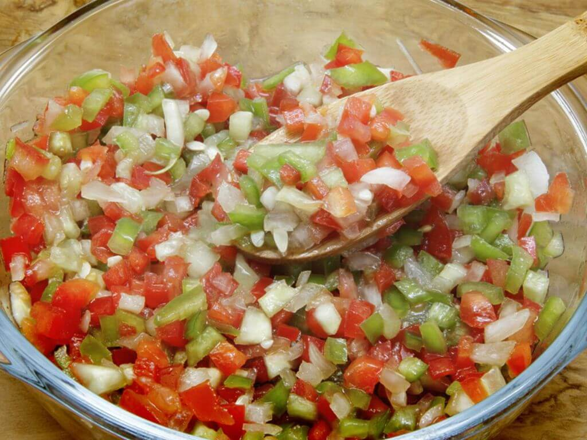

<link rel="stylesheet" href="../style.css">
<main>
    <h1>🍅 Vinagrete 🧅</h1>
    
    <h3>É um acompanhamento incrível, melhor servido com arroz e carne no churrasco!</h3>
    <p>Desde que era pequeno, em todos os churrasco milha família fazia vinagrete para servir como acompanhamento.</p>
    <p>Sempre compramos os vegetais frescos direto da feira ou de um mercado de boa seleção de alimentos.</p>
    <h4 class="ingredientes">Ingredientes</h4>
        <ul>
            <li>1 tomate</li>
            <li>1 cebola</li>
            <li>2 colheres (sopa) de vinagre</li>
            <li>1/2 limão</li>
            <li>sal e pimenta-do-reino</li>
            <li>3 colheres de azeite</li>
            <li>salsa fresca</li>
        </ul>
    <h4>Modo de preparo</h4>
       <ol>
           <li>Corte a salsinha, a cebola e o tomate em pedacinhos bem pequenos e coloque tudo em um recipiente.</li>
           <li>Esprema o limão sobre os ingredientes já picados e acrescente o vinagre e o azeite.</li>
           <li>Tempere com sal e pimenta a gosto e sirva acompanhado de carnes e outros petiscos!</li>
       </ol>
    </main>